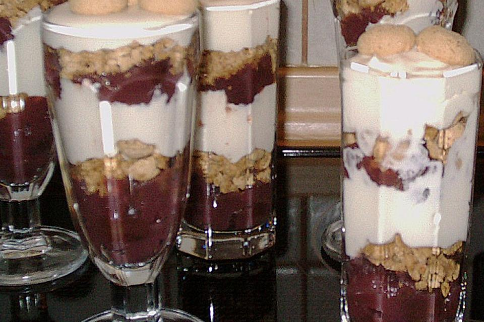

Baileys - Schichtdessert
Zutaten für 6 Portionen
- 200 g Schlagsahne
- 200 g Mascarpone
- 200 g Naturjoghurt 1,5 % Fett
- 100 g Puderzucker
- 150 ml Bailey_s Irish Cream
- 50 g Keks(e), zerstoßene Amarettini (oder auch mehr)
- 1 Glas Sauerkirschen
- 1 Pkt. Puddingpulver, Vanillegeschmack
Zubereitung
Arbeitszeit ca. 30 Minuten Gesamtzeit ca. 30 Minuten
Sauerkirschen mit dem Puddingpulver (oder auch Speisestärke) andicken und abkühlen lassen. Schlagsahne steif schlagen und anschließend mit Mascarpone, Joghurt, Zucker und Baileys verrühren. Die Creme abwechselnd mit den Amarettini und den Sauerkirschen in 6 Gläser schichten.
Kann durchziehen, muss aber nicht. Ich mag es lieber, wenn die Amarettini noch crunchy sind.
Rezept von: Gaby3 Rezept